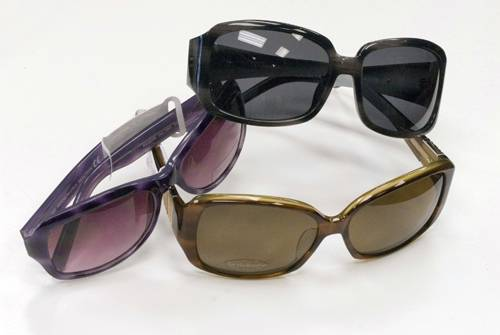

Guidelines For Picking the Right Pair of Shades
There is a lot more that goes into finding the right pair of sunglasses than just fit and fashion. While it’s important to look and feel great in your shades, sunglasses also have the very important job of properly protecting your eyes from the sun.


Here are a few facts about the dangers of UV exposure:
- Chronic UV exposure is linked to cataracts and macular degeneration in the long term.
- Intense UV exposure can cause symptoms of eye pain and irritation within 6-12 hours.
- Some medications such as birth control and certain antibiotics can increase sensitivity to UV so take extra precaution.
- The most common source of UV is the sun especially with depletion of the earth's ozone layer.
- Outdoor UV exposure is common in construction workers, landscapers and fisherman.
- Some indoor occupations also get high exposure such as dentists, medical and research technician, electric welding.
Here is what you need to consider to make sure you select a pair of sunglasses that look and feel great and offer full sun protection.
- 100% UV protection: The number one most important feature of your sunglasses must be proper UV protection. Look for a pair that blocks 99-100% of UVB and UVA rays. Lenses labeled as "UV 400," block all light rays with wavelengths up to 400 nanometers, which includes all UVA and UVB rays.
- Frame size: Pay attention to the size of the frame - the bigger (meaning the more surface area they cover and the less light they let in from the top and sides) the better. Wraparound styles are the best frames at keeping UV rays from entering in through the sides of the glasses.
- Lens materials, coatings and tints: There are many options for lenses designed to help you see better and more comfortably in certain conditions. Polarized lenses, photochromic lenses, anti-glare coatings, mirror-coatings and gradient tints are just a few. Your best bet is to speak to a professional optician to determine which options are best suited for your needs.
- Frame shape: The general rule for selecting a pair of eyewear that looks great is to contrast the shape of your face with the shape of the frame. For example if you have a round face, try out an angular frame, and for a square-shaped face, a rounder, softer frame will look great. Along with shape, the size of the frames should be considered. Frames should not be too large, small, narrow or wide for your face.
- Proper fit: Your sunglasses should feel comfortable; they shouldn’t squeeze at your temples but they also shouldn’t be so loose that they will fall off. Your eyelashes shouldn’t touch the lenses and the frames should rest comfortably on your nose and ears.
- Lifestyle fit: Your eyewear should be the proper fit for your lifestyle. For example, if you are active in sports or outdoor activities, polarized lenses in a durable frame are a must. There are many sunglass manufacturers out there that make eyewear to match certain lifestyles and activities so speak to your optician about your interests and hobbies to make sure you find the best pair to match your needs.
- Frame color: The same wardrobe colors that match your skin tone, will look good in your eyewear. Generally speaking, if you have cool-toned skin (pink or rosy undertones) you will look best in blue-based hues such as blues, pinks, purples or greys. Alternatively, if you have warm-toned skin (golden or apricot undertones), you will want to try out yellow-based colors such as golds, oranges, reds, browns or tans.
Remember, sunglasses aren’t just for fun in the sun. Dangerous UV rays can penetrate clouds and reflect off of water and snow. So even when the sun isn’t shining, a good pair of sunglasses should be worn every day to keep your eyes safe and to help you see your best.
Ready to see clearly?
Book a comprehensive eye exam with Carey Brooks, OD in Frisco, TX.